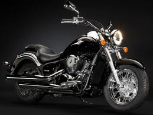

Una motocicleta, comúnmente conocida en castellano con la abreviatura moto, es un vehículo de dos ruedas, impulsado por un motor que acciona la rueda trasera, salvo raras excepciones. El cuadro o chasis y las ruedas constituyen la estructura fundamental del vehículo. La rueda directriz es la delantera. Pueden transportar hasta dos personas, y tres si están dotadas de sidecar.
El estadounidense Sylvester Howard Roper (1823-1896) inventó un motor de cilindros a vapor (accionado por carbón) en 1867. Ésta puede ser considerada la primera motocicleta, si se permite que la descripción de una motocicleta incluya un motor a vapor.
Wilhelm Maybach y Gottlieb Daimler construyeron una moto con cuadro y cuatro ruedas de madera y motor de combustión interna en 1885. Su velocidad era de 18 km/h y el motor desarrollaba 0,5 caballos.
Gottlieb Daimler usó un nuevo motor inventado por el ingeniero Nikolaus August Otto. Otto inventó el primer motor de combustión interna de cuatro tiempos en 1876. Lo llamó «Motor de Ciclo Otto» y, tan pronto como lo completó, Daimler (antiguo empleado de Otto) lo convirtió en una motocicleta que algunos historiadores consideran la primera de la historia. En 1894 Hildebrand y Wolfmüller presentan en Múnich la primera motocicleta fabricada en serie y con claros fines comerciales. La Hildebrand y Wolfmüller se mantuvo en producción hasta 1897. Los hermanos rusos afincados en París Eugéne y Michel Werner montaron un motor en una bicicleta. El modelo inicial con el motor sobre la rueda delantera se comenzó a fabricar en 1897.
En 1902 se inventó el Scooter (proviene del inglés scooter), también conocido como auto sillón, por el francés Georges Gauthier. La escúter es un vehículo de dos ruedas, biciclo, provisto de un salpicadero de protección. Fue fabricada en 1914. Tuvo una gran popularidad, sobre todo entre los jóvenes. Incorpora dos ruedas de poco diámetro y un cuadro abierto que permite al conductor estar sentado en vez de a horcajadas. También tiene una carrocería que protege todos los mecanismos, y ofrece algún pequeño espacio de almacenaje de objetos pequeños y de una rueda de recambio. Son vehículos urbanos, aunque también se pueden hacer viajes largos. Lo que destaca en este tipo de transporte es la comodidad del manejo y facilidad de conducción, y no el desarrollo de grandes velocidades.
En 1910 apareció el sidecar, un carro con una rueda lateral que se une a un lado de la motocicleta. Consta de un bastidor (de una sola rueda) y de una carrocería que protege al pasajero. La motocicleta que lo arrastra, se convierte en un vehículo de tres ruedas y su conducción se controla mediante el giro del manillar, al no poder ejecutarse la basculación. Ya había aparecido años antes, pero en bicicletas y con la proliferación de los vehículos llamados «utilitarios», además de la prohibición de su fabricación por los gobiernos recientemente, ha desaparecido prácticamente de la circulación.
Después de volver de la Segunda Guerra Mundial (1945), los soldados estadounidenses parecían descontentos con las motocicletas que eran construidas por Harley-Davidson e Indian. Las motos que habían montado en Europa eran más ligeras y más divertidas de conducir. Estos veteranos comenzaron a andar con otros ex soldados para volver a vivir algo de la camaradería que habían sentido en el servicio. Estos grupos se dieron cuenta que sus motocicletas necesitaban los cambios que Harley no les proporcionaba. Así nació la Motocicleta Custom.
| INICIO |